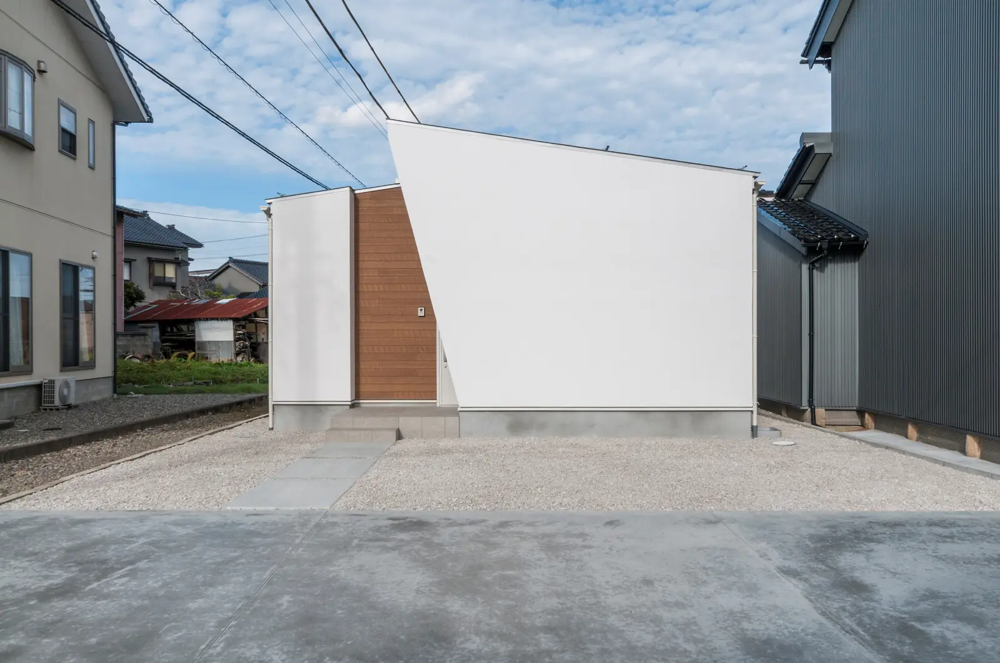
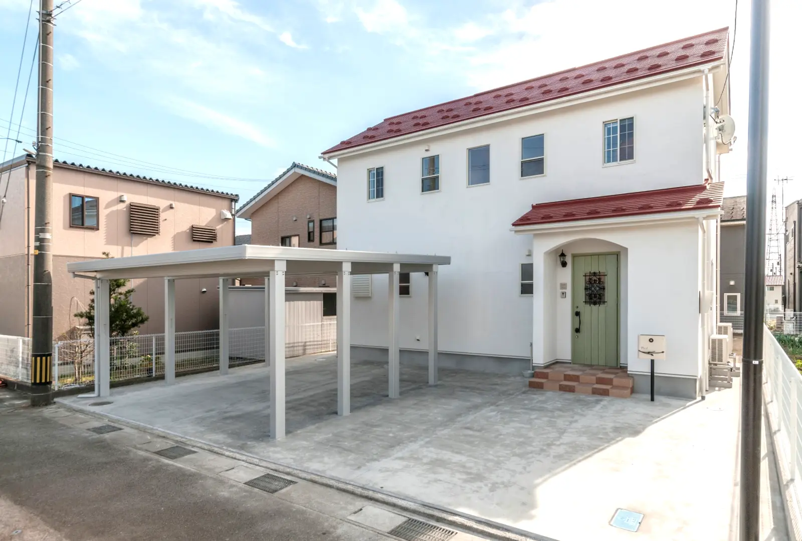
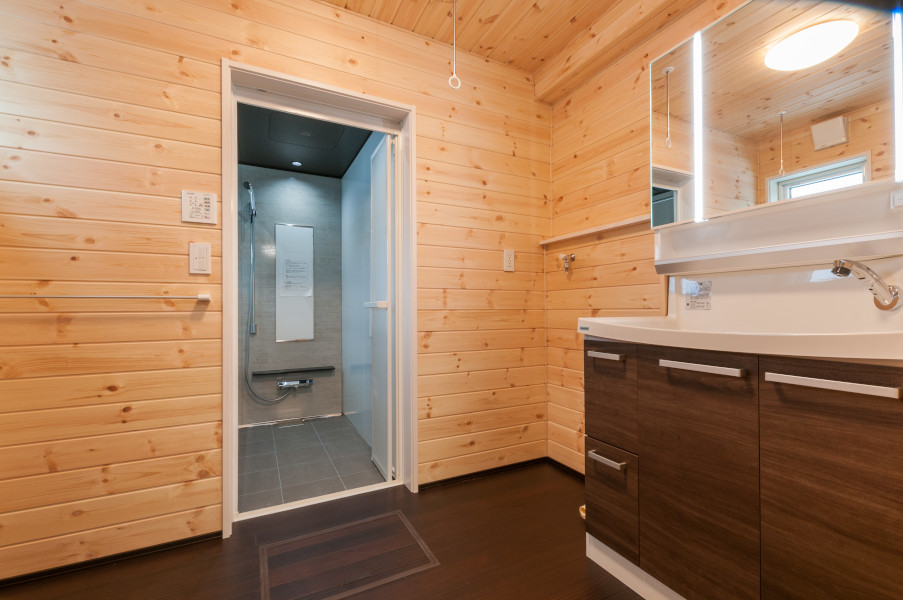

01OUR PHILOSOPHY

自然素材素材が呼吸する、心地よい室内環境。
OUR PROMISE
自分が住みたくない家は、
建てたくない。
食べ物と同じように、住まいの素材も家族の健康に関わります。だから私たちは、毎日触れる床や壁に、無垢材や漆喰などの天然素材を使います。
ただ安い家ではなく、安心して長く暮らせる家を納得できる価格で。無駄な経費を抑え、一棟ずつ正直に家づくりをしています。
- 漆喰SHIKKUI
- 無垢材SOLID WOOD
- 自社大工CRAFTSMANSHIP
FUJISOU STANDARD
家づくりに、
欠かせないこと。
素材だけでも、性能だけでもない。
富山で永く暮らすための、五つの基準です。
- 01
自然素材
毎日触れる床や壁に、無垢材と漆喰を。
- 02
全面漆喰
ビニールクロスに頼らず、塗り壁の特性を生かす。
- 03
耐震等級3
地震への備えを、家づくりの基本に。※建物・計画条件は個別にご説明します。
- 04
断熱・調湿
夏も冬も、過ごしやすい室内環境を目指す。
- 05
富山の工務店
地域の気候と暮らしを知り、完成後も見守る。
HONEST VALUE
自然素材の家は、
高いと思っていませんか？
必要なところには、きちんとお金をかける。余計な経費は、できるだけ抑える。
私たちが目指すのは、安心して長く暮らせる家を、納得できる価格で届けることです。
価格への考え方を見るBEFORE YOU DECIDE
決める前の相談から、
始められます。
「まだ何も決まっていない」状態でも大丈夫です。
- 自然素材の家に住みたい
- 漆喰や無垢材に興味がある
- 建築費をできるだけ整理したい
- 平屋か2階建てか迷っている
- 土地がまだ決まっていない
- 住宅ローンが心配
- 他社と比較してから決めたい
- リフォームか建て替えか迷っている
分からないことを、一つずつ整理するところから始めます。
まずは無料相談する02EXTERIOR WORKS
FUJISOU AINOS GALLERY
実際に建てた家を、
ご覧ください。
広さ、素材の質感、収納、間取り。写真から、ご家族の暮らしに近い住まいを見つけてください。


DESIGN INSPIRATION
家族をつなぐかたちに、
木のぬくもりを。
渡り廊下がつなぐ、二世帯の住まい。落ち着いたチャコールと木目の表情から、ご家族の暮らしに合う色やかたちを考えてみませんか。
チャコール木目アイボリー
理想の住まいを相談する
03THREE FREE-PLAN HOMES
AINOS HOME COLLECTION
あなたに合う家を、
一緒に考えます。
家族構成、土地、予算、暮らし方は人それぞれ。一つの形を押しつけず、ご家族に合う住まいを考えます。

01SIMPLY
洗練 × 高性能
洗練されたデザインと、機能的な設計の高性能住宅。
- 自然エネルギーを活用するZEH志向
- 天然素材を使った安全性への配慮
- 高性能設備による省エネ設計
- セキュリティ対応設計
- 最長60年の長期保証プログラム
FOR — シンプルな意匠、性能、光熱費のバランスを求める方

02Pretty
かわいい × DIY
セルフビルドでつくる、「かわいい」がいっぱい詰まった住宅。
- 自然素材を生かすDIY住宅
- シャビーシックやアンティークの表情
- カラータイルとステンドグラス
- 無垢の木でつくるキッチン
- 省エネ性能と最長60年の長期保証
FOR — 色、素材、手づくりの楽しさを住まいに取り入れたい方
 03
03Healthy
自然素材 × 健康
住む人の健康を第一に考えた、本物の自然素材住宅。
- 不健康素材ゼロを目指す7つの挑戦
- 乾燥無垢材、無垢床、漆喰の塗り壁
- セルロースファイバー断熱
- 耐震等級3の災害に強い設計
- 温湿度差を抑える快適性と省エネ設備
FOR — 空気、素材、耐震性まで妥協せず家族の健康を守りたい方
04 CHOOSE YOUR HOME
あなたに合う家は、どの家ですか？
写真を見ながら、それぞれの家づくりをご覧ください。気になるプランを選ぶと詳しい内容を確認できます。
 01 / 03
01 / 03SIMPLYシンプルで高性能な家
使いやすい間取りと省エネ性能で、毎日の暮らしを快適に。
 02 / 03
02 / 03Prettyかわいいを楽しむ家
タイルや無垢材、DIYを取り入れて、自分らしい住まいに。
 03 / 03
03 / 03Healthy家族の健康を考えた家
無垢材と漆喰を使い、安心して子育てできる住まいに。
間取りや仕様は、ご家族のご希望とご予算に合わせてご提案します。
SHIKKUI WALL
なぜフジ創は、
漆喰にこだわるのか。
毎日目にし、空気に触れる壁だから。調湿性や不燃性といった特性に加え、年月を重ねても飽きにくい自然な表情を大切にしています。
漆喰について詳しく見る

05HEALTHY MATERIAL POLICY
SEVEN CHALLENGES
「何を使わないか」まで考える、
7つの素材選び。
毎日を過ごす家だから、見える部分も見えない部分も素材を選びます。
- 01集成材を使わない乾燥無垢材の構造
- 02合板フローリングを使わない無垢フローリング
- 03ビニールクロスを使わない漆喰の塗り壁
- 04素材を選ぶ断熱セルロースファイバー
- 05化粧合板建具を使わない無垢材建具
- 06樹脂造作材を使わない無垢造作材
- 07農薬系防蟻剤を使わないホウ酸による防蟻
性能・保証
安心して、長く暮らせる家。
丈夫な構造、快適な室内、完成後の保証。目に見えない部分も、ご契約前に分かりやすくご説明します。
耐震等級3
一棟ごとに構造を確認し、地震に強い家をつくります。
断熱と調湿
天然素材の力を生かし、夏も冬も過ごしやすい室内へ。
内容を明確に
使う材料や保証、将来のお手入れまで事前にお伝えします。
長期保証
お引渡し後も、末永くお付き合いします。
定期点検と保証制度で、大切な住まいを長く見守ります。
最長60年保証には、所定の点検やメンテナンスなどの条件があります。
MONEY & LAND
家の話より先に、
暮らしのお金の話を。
土地と建物を別々に考えず、これからの生活まで含めて順番を整えます。
「いくらかかるか」を先に整理。
土地、建物、付帯工事、外構、諸費用、住宅ローン。総額を見ながら、無理のない計画を考えます。
家づくりの費用を相談する →土地がなくても、始められます。
土地だけを先に決めず、建てたい家と資金計画を合わせて考えることが大切です。
BUILDING JOURNEY
出会いから完成後まで、
7つのステップ。
ボタンを選ぶと、その段階で何を決めるのかを確認できます。
話
まずは気軽にご相談
希望の暮らし、予算、土地の有無、不安に感じていることを伺います。
無料相談JOURNAL & EVENTS
見て、知って、
家づくりを確かめる。
実際の家を体感できる見学会と、土地・住宅ローン・住まいに役立つ記事をご案内します。
FOR FIRST-TIME VISITORS
初めての家づくり。
何から始めればいい？
土地、住宅ローン、間取り、予算。分からないことがあって当然です。今の状況を聞き、一緒に整理するところから始めます。

LOCAL BUILDER IN TOYAMA
富山の家族に、富山の家を。
フジ創アイノスは、高岡市の本社・ショールームと富山市の事務所を拠点に、高岡市・砺波市・富山市・射水市・南砺市などで注文住宅を手がけています。自然素材の平屋、2階建て、土地探し、住宅ローン、リフォームまで、地域の身近な相談相手として家づくりを支えます。
- TAKAOKA HEAD OFFICE / SHOWROOM
- 〒933-0062 富山県高岡市江尻846-1
- TOYAMA OFFICE
- 〒939-8006 富山県富山市山室256-4 SKビル 2-A
- OPEN
- 9:00–18:00 / 水曜・木曜定休
- CONTACT
- 0800-200-2661
CONTACT
家づくりのこと、
まずは話してみませんか？
土地も予算も、まだ決まっていなくて大丈夫です。
「何から始めればいい？」からお聞かせください。
お電話で相談0800-200-2661受付 9:00–18:00
水曜・木曜定休電話をかける メールで相談info@ainos.bizご質問やご相談をいつでもお送りくださいメールを送る
水曜・木曜定休電話をかける メールで相談info@ainos.bizご質問やご相談をいつでもお送りくださいメールを送る
LINEで相談友だち追加QRコードを読み取るか、ボタンから追加できますLINEで友だち追加
しつこい営業はいたしません。ご相談だけでも安心してお問い合わせください。